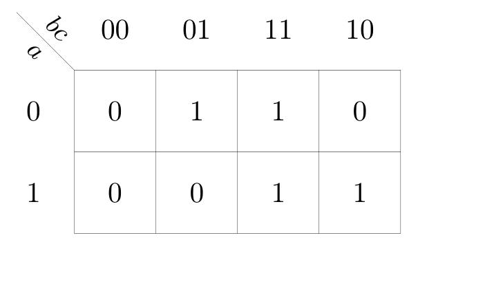
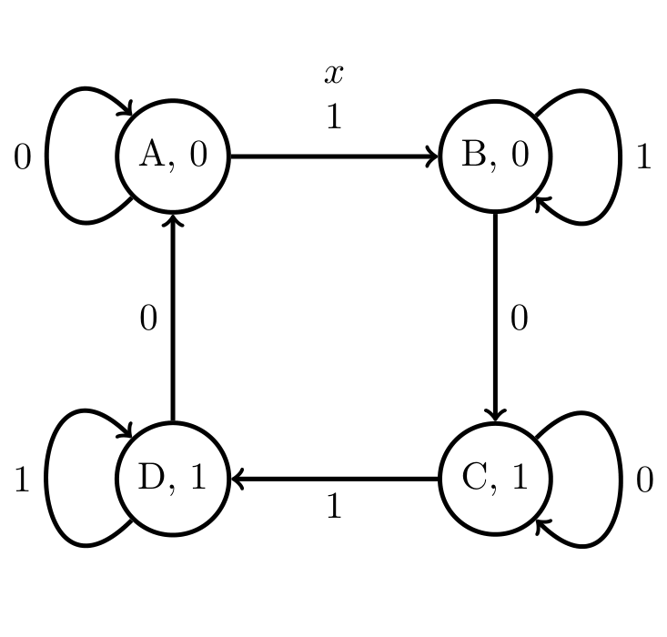
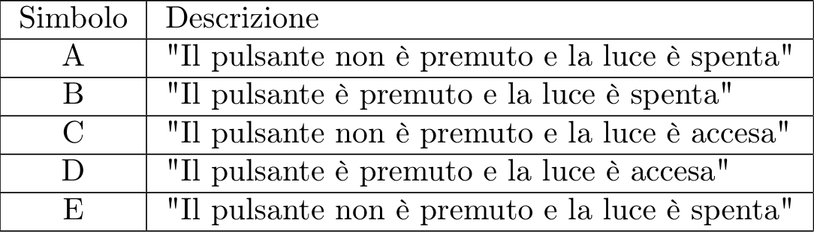
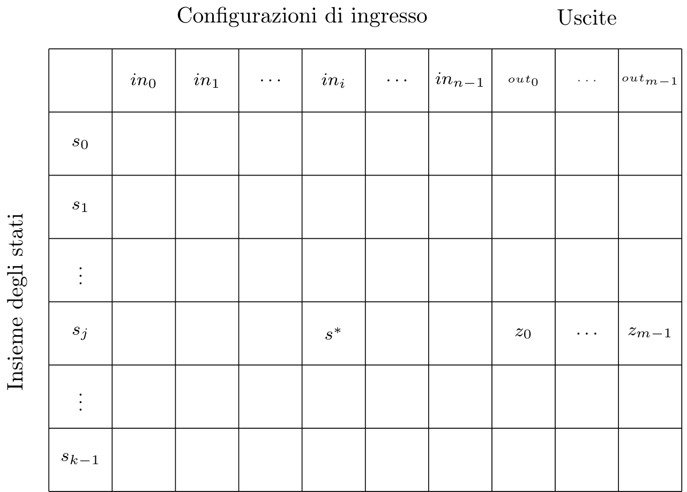

Definizione - Rete sequenziale asincrona (RSA)
Una rete sequenziale asincrona è una rete sequenziale in cui lo stato presente è sovrascritto non appena lo stato futuro è calcolato.
In una RSA quindi, ad ogni istante, sono calcolati:
In una RSA quindi, ad ogni istante, sono calcolati:
- \( m\) segnali di uscita della rete;
- \( k\) segnali di stato futuro.
- \( n\) segnali di ingresso;
- \( k\) segnali di stato presente.
Definizione - Memoria in una RSA
Sappiamo che ogni gate reale ha un ritardo di propagazione
\( \tau_{p}\)
: ogni rete è quindi caratterizzata da un segnale ideale che cambia istantaneamente al variare degli ingressi, ed un segnale reale, soggetto al ritardo.
Tale ritardo può tuttavia essere visto come una memoria del valore precedente: ciò può essere sfruttato collegando i gate in retroazione.
 Si ha quindi che ogni collegamento in retroazione fornisce un bit di memoria e, per questo motivo, si ha che una rete con
\( k\)
bit di stato ha
\( k\)
collegamenti in retroazione.
Si ha quindi che ogni collegamento in retroazione fornisce un bit di memoria e, per questo motivo, si ha che una rete con
\( k\)
bit di stato ha
\( k\)
collegamenti in retroazione.
Tale ritardo può tuttavia essere visto come una memoria del valore precedente: ciò può essere sfruttato collegando i gate in retroazione.
Definizione - RSA come Finite State Machine (FSM)
Una RSA è quindi un caso particolare di automa (o macchina a stati finiti), ovvero un sistema matematico caratterizzato da:
- un insieme \( I\) detto alfabeto di ingresso;
- un insieme \( U\) detto alfabeto di uscita;
- un insieme \( S\) degli stati;
- una funzione \( F: S \times I \to U\) di uscita;
- una funzione \( G: S \times I \to S\) di aggiornamento dello stato interno.
- l'automa di Mealy, in cui l'uscita dipende dallo stato interno e dagli ingressi, ovvero
- l'automa di Moore, in cui l'uscita dipende solo dallo stato interno.
Definizione - Comportamento di una RSA
Per poter descrivere il comportamento di una RSA non è sufficiente utilizzare una tabella della verità, ma è necessario ricorrere a formalismi come:
- il grafo degli stati;
- la tabella di flusso.
Definizione - Grafo degli stati - Automa di Mealy
Il grafo degli stati è un grafo ad archi orientato dove:
Per rendere più comprensibili tali grafi, si utilizza anche una tabella in cui si associano gli identificatori degli stati (
\( A, B, C, D\)
) a delle descrizioni, ovvero
Un grafo, per essere completo, deve prevedere che da ogni nodo escano tanti rami quante sono le configurazioni binarie possibili degli ingressi.
Un nodo che prevede almeno un arco che ritorna su di esso è definito stato stabile.
Un arco proveniente da uno stato in cui l'uscita è diversa da quella dello stato di arrivo (ovvero quando l'uscita cambia) può prevedere come uscita anche il valore di indifferenza (" \( -\) ") in quanto non è importante che il valore si modifichi qualche nanosecondo prima o dopo. Ciò non può tuttavia avvenire se l'uscita rimane invariata, in quanto darebbe vita ad un "glitch".
Affinchè una RSA funzioni con continuità, il grafo degli stati deve:
- ogni nodo rappresenta lo stato presente;
- ogni arco rappresenta una transizione da stato presente a stato futuro in corrispondenza di una o più configurazioni di ingresso;

Un nodo che prevede almeno un arco che ritorna su di esso è definito stato stabile.
Un arco proveniente da uno stato in cui l'uscita è diversa da quella dello stato di arrivo (ovvero quando l'uscita cambia) può prevedere come uscita anche il valore di indifferenza (" \( -\) ") in quanto non è importante che il valore si modifichi qualche nanosecondo prima o dopo. Ciò non può tuttavia avvenire se l'uscita rimane invariata, in quanto darebbe vita ad un "glitch".
Affinchè una RSA funzioni con continuità, il grafo degli stati deve:
- essere strettamente connesso, ovvero deve esistere sempre almeno un percorso per passare da un qualsiasi nodo all'altro.
- non contenere nodi irraggiungibili (o parti di grafo), ovvero dotati di sole frecce uscenti;
- non contenere nodi assorbenti (o parti di grafo), ovvero dotati di sole frecce entranti.
Definizione - Grafo degli stati - Automa di Moore
Nel caso si stia descrivendo un automa di Moore (ovvero una macchina a stati a finiti in cui la funzione di uscita dipende solo dallo stato presente e non dagli ingressi), il grafo degli stati prevede che in ogni nodo sia riportata anche l'uscita e che non lo sia sopra agli archi, ovvero

Esempio - Descrivere il comportamento di una RSA con un grafo a stati - Lampada da tavolo
Una lampada da tavolo (del tipo in cui la lampadina si accende al rilascio di un pulsante se è accesa e si spegne nel caso sia spenta) è una rete sequenziale asincrona.
Per disegnare il grafo degli stati teniamo presente che:
 In questa situazione, l'unica cosa che è possibile fare è premere il pulsante, andando in un nuovo stato, ovvero
Nello stato "A" si possono quindi verificare due eventi:
A questo punto è possibile che:
che può essere rappresentato come
In questa situazione, l'unica cosa che è possibile fare è premere il pulsante, andando in un nuovo stato, ovvero
Nello stato "A" si possono quindi verificare due eventi:
A questo punto è possibile che:
che può essere rappresentato come
 Iterando questo processo, si può arrivare ad ottenere la seguente situazione
Iterando questo processo, si può arrivare ad ottenere la seguente situazione

 Ma è possibile notare che lo stato "E" e lo stato "A" coincidono, ed è quindi possibile eliminare lo stato "E" ottenendo il seguente diagramma degli stati:
Ma è possibile notare che lo stato "E" e lo stato "A" coincidono, ed è quindi possibile eliminare lo stato "E" ottenendo il seguente diagramma degli stati:
 Infine, è possibile notare che nei collegamenti "B-C" e "D-A" l'uscita cambia ed è quindi possibile aggiungere un'indifferenza sull'uscita
Infine, è possibile notare che nei collegamenti "B-C" e "D-A" l'uscita cambia ed è quindi possibile aggiungere un'indifferenza sull'uscita
Per disegnare il grafo degli stati teniamo presente che:
- si ha un ingresso \( x\) associato al pulsante: se tale pulsante è premuto l'uscita assume valore \( 1\) , altrimenti ha valore \( 0\) ;
- si ha un'uscita \( z\) associata allo stato della lampadina: al valore \( 0\) corrisponde la luce spenta, al valore \( 1\) la luce accesa.
- il pulsante rimane non premuto (ovvero si ha "stabilità");
- il pulsante viene premuto (ovvero si transita verso lo stato successivo).

- il pulsante rimanga premuto (ovvero si ha "stabilità");
- il pulsante viene rilasciato (ovvero si transita verso lo stato successivo) e la luce si accende.

Definizione - Stato iniziale (o reset)
Nelle macchine elettroniche non è possibile prevedere il valore dei segnali in retroazione all'accensione: non è possibile quindi avere certezza sullo stato iniziale (e ciò potrebbe determinare un problema).
Tipicamente si utilizza quindi un ingresso aggiuntivo per la rete (detto ingresso di reset) che segnala quando la macchina si sta accendendo. Esso, infatti, assume il valore \( 1\) solo nei primi istanti di funzionamento (e \( 0\) per il tempo restante).
Per ottenere quindi come bit di stato iniziale il valore \( 0\) lo si collega (con l'ingresso di reset negato) nel seguente modo:
in questo modo si ha che per i primi istanti di funzionamento esso assumerà valore
\( 0\)
andando a "bloccare" l'AND che sarà costretto all'uscita
\( 0\)
. Successivamente, l'ingresso di reset avrà valore
\( 1\)
diventando quindi neutro per l'AND.
Similmente, è possibile ottenere come bit di stato iniziale il valore \( 1\) collegando l'ingresso di reset (questa volta non negato) nel seguente modo:
si ottiene quindi che per i primi istanti il gate OR è costretto all'uscita
\( 1\)
mentre successivamente è neutro.
Collegando quindi l'uscita dei gate in retroazione è possibile determinare lo stato iniziale della rete.
Tipicamente si utilizza quindi un ingresso aggiuntivo per la rete (detto ingresso di reset) che segnala quando la macchina si sta accendendo. Esso, infatti, assume il valore \( 1\) solo nei primi istanti di funzionamento (e \( 0\) per il tempo restante).
Per ottenere quindi come bit di stato iniziale il valore \( 0\) lo si collega (con l'ingresso di reset negato) nel seguente modo:
Similmente, è possibile ottenere come bit di stato iniziale il valore \( 1\) collegando l'ingresso di reset (questa volta non negato) nel seguente modo:
Collegando quindi l'uscita dei gate in retroazione è possibile determinare lo stato iniziale della rete.
Definizione - Tabella di flusso - Automa di Mealy
In alternativa al grafo degli stati, è possibile descrivere il comportamento di una RSA attraverso una tabella di flusso:
dove
\( s^{*}\)
è lo stato futuro e
\( z\)
è l'uscita.
Un esempio reale potrebbe essere il seguente:
Nelle tabelle di flusso, le celle cerchiate indicano condizioni di stabilità.
È possibile controllare la correttezza formale della rete analizzando la tabella. Si deve avere infatti che:
Un esempio reale potrebbe essere il seguente:
È possibile controllare la correttezza formale della rete analizzando la tabella. Si deve avere infatti che:
- ogni riga deve avere almeno una condizione di stabilità;
- al di sotto di ogni condizione instabile deve essere presente una condizione stabile (al fine di evitare transizioni multiple).
Definizione - Tabella di flusso - Automa di Moore
Nel caso si stia descrivendo un automa di Moore, la tabella di flusso prevede delle colonne in più contenenti l'uscita, in quanto si ha che essa dipende solo dallo stato e non dalla configurazione di ingresso.
 Un esempio reale potrebbe essere:
Un esempio reale potrebbe essere:
Definizione - Tabella delle transizioni
Codificando i simboli degli stati in codice binario e sostituendoli alla tabella di flusso, si ottiene la tabella delle transizioni.
Quindi, data la tabella di flusso
 e la codifica degli stati
si può sostituire al simbolo dello stato la sua codifica e si ottiene la seguente tabella delle transizioni
e la codifica degli stati
si può sostituire al simbolo dello stato la sua codifica e si ottiene la seguente tabella delle transizioni
Quindi, data la tabella di flusso

Definizione - Da tabella delle transizioni a espressioni combinatorie
La tabella delle transizioni può essere anche vista come la composizione di diverse tabelle della verità.
Ad esempio, alla seguente tabella
 corrispondono le seguenti tabelle della verità (o mappe di Karnaugh):
corrispondono le seguenti tabelle della verità (o mappe di Karnaugh):
Ad esempio, alla seguente tabella
-
per lo stato futuro
\( Y_{1}\)
-
per lo stato futuro
\( Y_{0}\)

-
per l'uscita
\( z\)